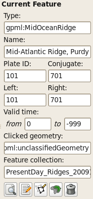
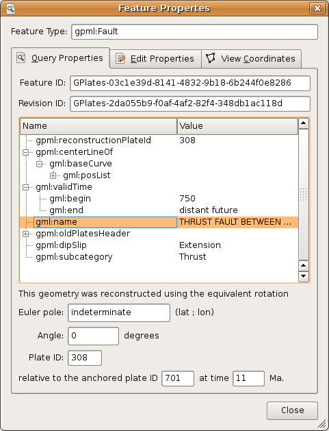
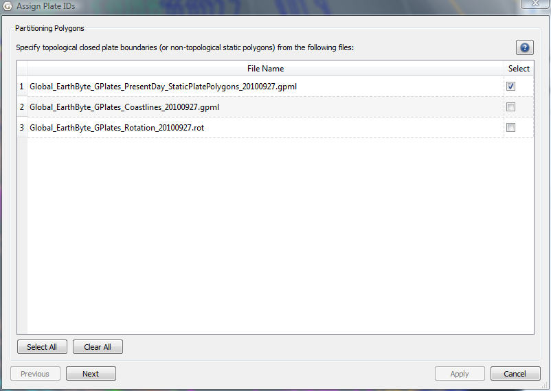

This chapter provides a guide to interacting with the geological features which you are creating or editing in GPlates.
1. Tools for Interacting with Features
To interact with features, the following tools can be used:
Icon |
Tool |
Shortcut |
Operation |
|
Choose Feature |
F |
Click a geometry to choose a feature. |
|
Move Vertex |
V |
Drag to move a vertex of the current feature. You can still drag the globe around |
|
Insert Vertex |
I |
Insert a new vertex into the feature geometry |
|
Delete Vertex |
X |
Remove a vertex from a multi-point, polyline or polygon geometry |
|
Split Feature |
T |
Click to split the geometry of the selected feature at a point to create two features |
|
|
To review information on all Tools please consult the Introducing the Main Window chapter. |
2.
 Choose Feature Tool
Choose Feature Tool
2.1. Clicked Geometry Table
You can query a feature, by first selecting
 then click the mouse cursor on what you want to query. The information will be displayed in the Clicked Geometry Table.
then click the mouse cursor on what you want to query. The information will be displayed in the Clicked Geometry Table.
|
|
The table will list all features that have geometry in proximity to the point that was clicked. This is useful in situations where multiple geometries, from different features, happen to lie on top of each other. In this case the mouse click will populate the Clicked Geometry Table with one entry for each geometry. You can then use to the Clicked Geometry Table to select the desired geometry. As you select each entry in the Clicked Geometry Table its geometry (as displayed on the globe) will highlight to show you which geometry you are selecting. |
|
|
Most features have a single geometry but some do have multiple geometries. For these features all geometries are highlighted, however the geometry that was actually clicked on is displayed in white whereas the other geometries (belonging to that feature) are displayed in grey. |
2.2. Current Feature Panel

The Current Feature Panel summarises the pertinent properties of the current feature. This is the starting point for further interaction with the feature. It contains:
-
Type of feature
-
Name of the feature
-
Plate ID of the feature (used for reconstruction)
-
Conjugate plate ID of the feature, if it has one
-
Plate IDs for the left and right sides of the feature, if applicable
-
Life-time of the feature (the period for when it exists)
-
The purpose of the clicked geometry
-
Buttons to:
-
Query Feature
-
 Edit Feature
Edit Feature
-
 Copy Geometry to Digitise Tool
Copy Geometry to Digitise Tool
-
 Clone Feature
Clone Feature
-
 Delete Feature
Delete Feature
-
The Edit menu also provides access to:
-
Undo
[Ctrl+Z] -
Redo
[Ctrl+Y] -
Query Feature
[Ctrl+R] -
Edit Feature
[Ctrl+E] -
Copy Geometry to Digitise Tool
-
Clone Feature
-
Delete Feature
[Delete] -
 Clear Selection
Clear Selection [Ctrl+K]
|
|
The valid life-time of the feature is a range of geological time, i.e from 65Ma to 0Ma (present day). |
2.3. Querying Feature Properties
To query the properties of the current feature, either click ,
, at the bottom of the Current Feature Panel, or press Ctrl+R to invoke the corresponding operation in the Edit Menu. The Feature Properties dialog will appear, containing a complete listing of the properties of the current feature.

|
|
You can keep this dialog open and continue to use the Choose Feature Tool to click on new features - the Feature Properties dialog will be automatically updated. |
2.3.1. Feature Type
This is the type of feature (e.g. fault, mid ocean ridge, subduction zone).
2.3.2. Query Properties Tab
This tab contains a complete listing of the properties of the current feature, presented in a concise, structured form which is easy to read, but does not allow editing of values.
2.3.3. Edit Properties Tab
This tab contains a table of properties, which enable editing of values. For more information on this tab, consult Editing Feature Properties below.
2.3.4. View Coordinates Tab
This tab contains a listing of the coordinates of the feature geometries, in both present-day and reconstructed-time position. For more information on this tab consult Viewing Coordinates below.
2.3.5. Feature ID
This is a unique label for this particular feature. It is a sequence of letters and numbers which is meaningful to GPlates. It is not yet of interest to users.
2.3.6. Revision ID
This is a unique label for this particular version of this feature. It is a sequence of letters and numbers which is meaningful to GPlates. It is not yet of interest to users.
2.4. Editing Feature Properties
This sequence of screenshots, first shows the initial window that will appear, and the following images display the options provided after selecting a property to edit. Each type of property has its own editing options.
The table in the centre lists all the properties belonging to the currently-chosen feature. The left hand column lists property names, and the right hand column lists property values.
The name of a property is a way to associate meaning with the feature data - for instance, this feature has a plate ID associated with it. That plate ID is 308. It is stored in the gpml:reconstructionPlateId property, indicating that GPlates should use that plate ID to reconstruct the feature.
Clicking a row of the table will expand the bottom half of the dialog with new controls specific to the property that was clicked.
2.5. Editing Geometry
|
|
For further information on editing feature geometries please read the Editing Geometries chapter. |
The controls for directly editing the coordinates used by geometry appears as a table with Lat, Lon, and Actions columns. Click a row of the table to select it, and the following action buttons will appear:
 Insert a new row above
Insert a new row above
 Insert a new row below
Insert a new row below
 Delete row
Delete row
-
Double-clicking an entry in the table lets you edit a coordinate directly.
-
The Valid Geometry line will indicate if the coordinates in the table can be turned into correct geometry. It will indicate an error if there is something invalid about the coordinates, such as a lat/lon of 500 or similar.
-
-
The "Append Points" spin-boxes are designed to be a convenient means of data entry, if you need to enter some points from a hard copy source.
-
Click in the Lon to start entering new coordinates. Type in a lon value, press TAB, type in a lat value, press TAB (to move to the "+" button), press SPACE to activate that button. The new coordinate line will be added to the table, and GPlates will prepare to receive the next line of input.
-
-
Selecting a property from the table and selecting Delete will delete the property from the feature.
2.6. Adding a Feature Property
By clicking on Add Property in the Feature Properties window, a new dialog will appear where you can select the Name, Type and Value of a property. In most cases, you will only need to select the name of the property you wish to add; the type of that property will be filled in automatically for you.

In the image above, the user has clicked on the down arrow of the combo box, and is selecting the "gpml:leftPlate" property. This property is used to annotate which regions are on either side of features such as a mid ocean ridge.

With the property name chosen, the lower section of the dialog presents the appropriate controls for entering the new value - in this case, a plate ID. Press Enter or the OK button to confirm the addition of the new property.
|
|
If the property you are adding is not appropriate for the type of feature then a warning message is displayed at the bottom of the Add Property dialog. |
2.7. Viewing Coordinates

The View Coordinates dialog provides a tree view summarising the coordinates of every geometry in the feature.
The Property Name column lists the names and types of geometry, plus an enumeration of each coordinate. The Present Day column lists the coordinates of the geometry as it appears in the present, i.e. 0 Ma. The Reconstructed column lists the coordinates of the geometry as they appear on screen at the current view time, which for convenience is displayed at the bottom of the dialog.
2.8.
Copy Geometry to Digitise Tool
Makes a copy of the geometry of the currently chosen feature (if any has been selected) and transfers the copied geometry to the appropriate digitisation tool:
-
 Polyline Geometry tool for polyline geometry,
Polyline Geometry tool for polyline geometry,
-
 Point Geometries tool for point or multi-point geometry,
Point Geometries tool for point or multi-point geometry,
-
 Polygon Geometry tool for polygon geometry.
Polygon Geometry tool for polygon geometry.
You can then create a new feature from within the digitisation tool or, if you are not ready to create a new feature yet, you can further digitise the geometry to add lines (or points) or switch to a different geometry editing tool such as the Move Vertex Tool to make adjustments.
|
|
This ability is useful when you want to create a new feature that has the same geometry as another feature but you want the feature type to be different or you want a new feature that has different properties (but same geometry). |
|
|
Copy Geometry to Digitise Tool does not work on topological features such as Topological Closed Plate Polygon features. The geometry of these features changes dynamically as the reconstruction time changes. |
2.9.
Clone Feature
Makes a copy of the entire feature (the currently chosen feature - if any has been selected). This differs from the Copy Geometry to Digitise Tool in that not only is the geometry of the feature copied but also all other properties of the feature are copied.
After this operation you will have two features which are identical except for their feature ID (the uniqueness identifier). The focused feature will now be the new cloned feature. Since both features have the same geometry(s) they will be indistinguishable except for the fact that they have different feature IDs, however the mouse click point will now reveal two features in the Clicked Geometry Table - the original feature and the cloned feature.
|
|
Unlike Copy Geometry to Digitise Tool, Clone Feature does work on topological features such as Topological Closed Plate Polygon features. In this case the time-dependent list of topological sections referenced by a Topological Closed Plate Polygon feature is just another property of that feature that gets copied like any other property. |
2.10.
Delete Feature
Deletes the currently chosen feature and removes it from the feature collection that contained it.
|
|
The feature collection is marked as modified but is not automatically saved to file (see the Loading And Saving chapter). |
3. Features Menu
- The Features Menu contains a number of tools that are used to interact with features less directly. It has the following structure
-
=== Assign Plate IDs Assigns reconstruction plate IDs (and optionally time of appearance/disappearance) to a set of features. This is typically done to features that do not yet have plate IDs (or valid time ranges) but it can also override an existing plate ID, of a feature, with a new plate ID. To start the process, use the Assign Plate IDs item on the Features menu.
Two sets of features are required for this process:
-
A set of partitioning features.
These are the features that the plate IDs (and optionally time ranges) are copied from. These features must have (or generate) polygon geometry and hence can be either static polygon features (where the polygon geometry does not change shape) or Topological Closed Plate Polygons features (where the polygon shape changes dynamically as the reconstruction time changes). These features remain unmodified by this process.
-
A set of features to be partitioned.
These are the features that the plate IDs (and optionally time ranges) are copied to. And also, depending on the partitioning option chosen, the geometry(s) in these features can be partitioned (cookie cut) into several smaller geometries (still belonging to the one feature). Hence these features are modified by the addition, or modification, of plate ID (and optionally time range) properties and also their geometry property(s) depending on the partitioning options selected.
Here is an example of selecting partitioning features that are static polygons.

Here is an example of selecting coastline features to be partitioned (by the static polygons in the previous dialog page).

Here the user can specify some options.

3.0.1. Specifying the reconstruction time
Select the reconstruction time representing the geometry in the feature collections. The three options for reconstruction time are:
-
Present day: the reconstruction time is 0Ma.
-
Current reconstruction time: the reconstruction time in the main window.
-
Specify reconstruction time: choose an arbitrary reconstruction time.
Note: Present day should be selected when assigning plate ids to VirtualGeomagneticPole features.
|
|
The partitioning polygon features are reconstructed to the specified reconstruction time before testing for overlap/intersection with the features to be partitioned. The geometry in features to be partitioned effectively represents a snapshot of the geometry of those features at the specified reconstruction time. In other words the features to be partitioned effectively contain geometry at the reconstruction time regardless of whether they have a reconstruction plate id property or not. However, most features in GPlates contain present-day geometry so this distinction is not that important (typically "Present day" will be selected). |
3.0.2. Specifying how to partition features
These three options determine how features are partitioned:
-
Copy feature properties from the polygon that most overlaps a feature:
Assign, to each feature to be partitioned, the plate ID of the partitioning polygon feature that its geometry(s) overlaps the most.
-
Copy feature properties from the polygon that most overlaps each geometry in a feature:
Assign, to each geometry of a feature to be partitioned, the plate ID of the partitioning polygon feature that its geometry overlaps the most. Note that a plate ID cannot be assigned to a geometry of a feature so instead extra features are created as necessary. For example if a feature to be partitioned has two geometries where one geometry overlaps plate A and the other geometry overlaps plate B then the feature to be partitioned will get split into two features - one feature containing the first geometry (and plate ID A) and the other containing the second geometry (and plate ID B). Note that although the feature is split into two features the geometries are not partitioned (cookie cut) and hence the geometry data remains unmodified.
-
Partition (cookie cut) feature geometry into polygons and copy feature properties:
Partition all geometries of a feature to be partitioned into the partitioning polygons intersecting them. This can create extra features, for example if a feature to be partitioned has only one geometry but it overlaps both plate A and plate B then it is partitioned into one or more geometries fully contained by plate A (and likewise for plate B). These partitioned geometries will now be contained by two features since they have different plate IDs. If the polygons do not cover the entire surface of the globe then it is possible for some features to be partitioned (or partitioned geometries) to fall outside all partitioning polygons. In this situation the feature to be partitioned is not modified and will retain its original feature properties (such as reconstruction plate ID). VirtualGeomagneticPole features are treated differently - these features are assigned to the polygon whose boundary contains the VirtualGeomagneticPole's sample site point location. For these features the above options are ignored.
3.0.3. Specifying which feature properties to copy
This options allows the user to specify which feature properties are copied from the partitioning polygon feature to the feature to be partitioned.
Currently two feature property options are supported (in the future this will be extended to support any feature property):
-
Reconstruction plate ID: the reconstruction plate ID property,
-
Time of appearance and disappearance: the time interval over which a feature exists.
|
|
These options are not mutually exclusive. Both can be selected. |
Depending on the number of features to be partitioned it can take a while to assign plate IDs and optionally partition the geometries.

The features to be partitioned have now been modified.

|
|
Currently if a feature to be partitioned contains polygon geometry and the "Partition (cookie cut) feature geometry…" option is selected then the resulting partitioned geometry will be polylines instead of polygons. This will be rectified in a future release. |
3.1. Generate Mesh Caps
The Generate Mesh Caps dialog can be accessed via Features→Generate Mesh Caps….
The mesh caps are used to calculate velocities. The sphere will be covered by 12 diamonds — Mesh Caps. Each diamond will be further divided into smaller pieces according to *Resolution" setting. Eventually, the sphere will be divided into evenly distributed diamonds with equal area.
3.1.1. Resolution
Users can specify the resolution of mesh caps. The nodex and nodey parameters indicate how the 12 original big diamonds can be divided evenly.
For the global mesh, the nodex always equals nodey. Currently, GPlates can only generate global mesh.
3.1.2. Output
You can specify the file name template, which will be used to generate output file names. The Output directory indicates the directory where the output file will be stored.
In total, 12 files will be generated in the specified output directory. The file names are created from template, for example %d.mesh.%c where the %d represents the mesh resolution and %c represents the cap index number.
|
|
The %d and %c must appear in the template once and only once. |